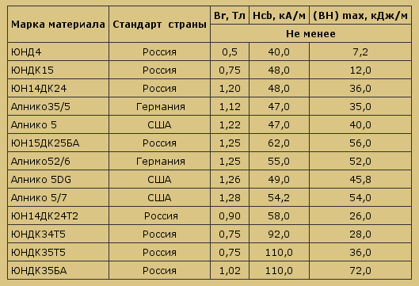

Свойства магнитов определяют следующие характеристики:
В зависимости от вышеперечисленных показателей магниты подразделяются на марки (сплавы):

1. Магниты литые сплошные цилиндрические, выпускаются различного диаметра, длины в зависимости от требований Заказчика. Область применения: электроизмерительные приборы, аппаратура связи, радиоаппаратура, станочные приспособления, захваты, блочные структуры и др.
2. Магниты литые полые цилиндрические, выпускаются различных диаметров, высоты в зависимости от требований Заказчика. Область применения: универсальные магниты для различных устройств.
3. Магниты литые сплошные с криволинейными, сферическими поверхностями, выступами, углублениями, выпускаются различных форм и размеров в зависимости от требований Заказчика. Область применения: электронная аппаратура, громкоговорители, статоры электромашин.
4. Полые магниты - цилиндры с лысками, выступами, углублениями, выпускаются различных диаметров, высоты в зависимости от требований Заказчика. Область применения: магниты для роторов двухполюсных электрических машин, преобразователей неэлектрических величин в электрические и др.
Более подробную информацию о характеристиках магнитов можно получить в отделе маркетинга Центра Новых Технологий.
Адрес: 346421, Ростовская область г. Новочеркасск, ул. Буденновская, 156
Телефон: +7 (86352) 2-27-41, 4-65-60
E-mail: krasnyh@yandex.ru
Контактная информация главного офиса "Группы Компаний Сезар":
Телефон:+7 812 320-04-24, +7 812 534-74-89
E-mail: tolipin@sezar.ru